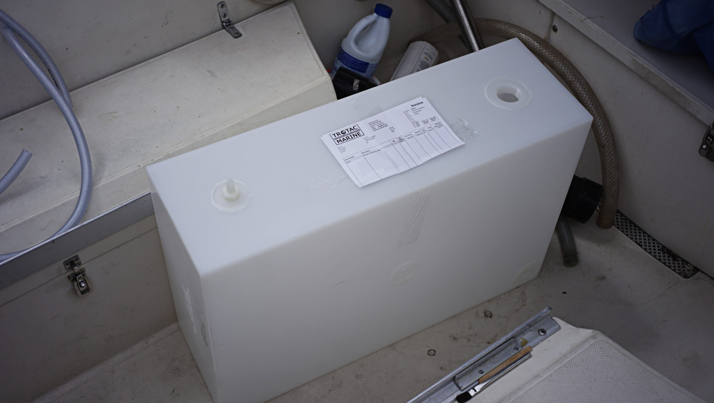
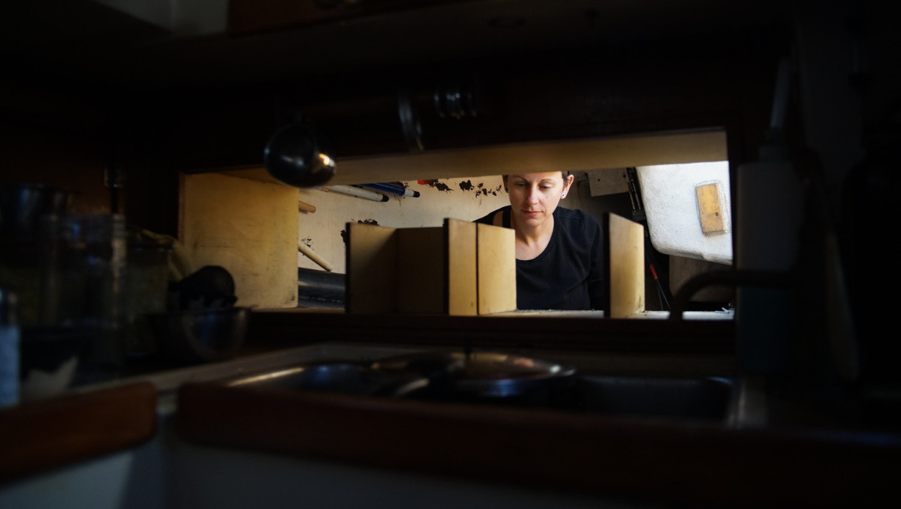
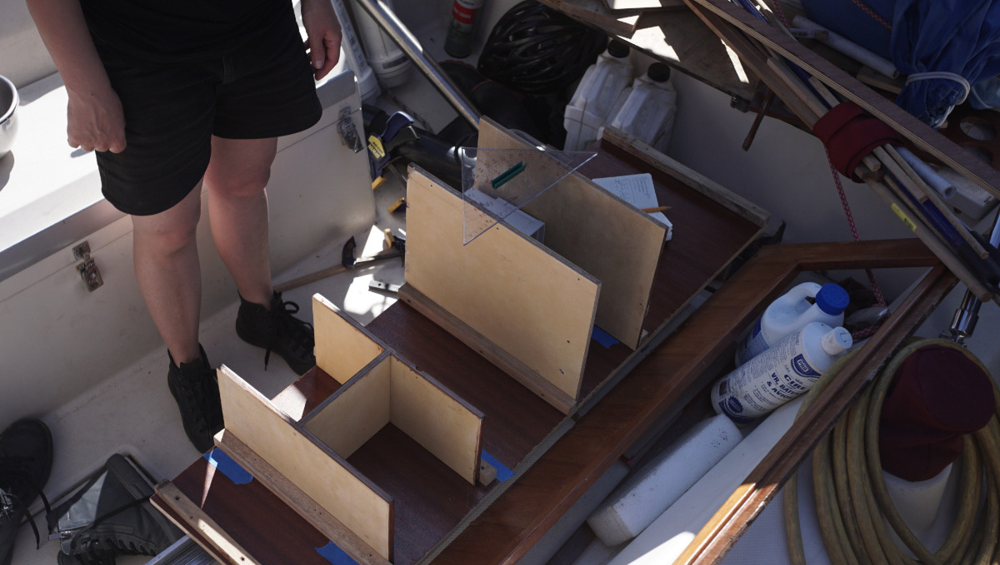
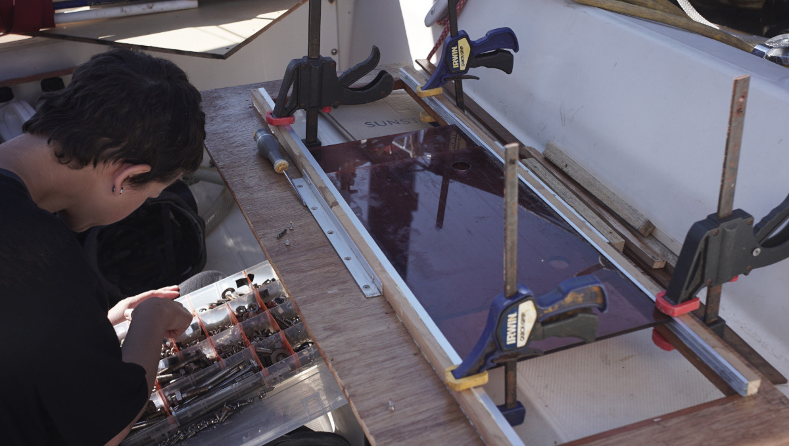
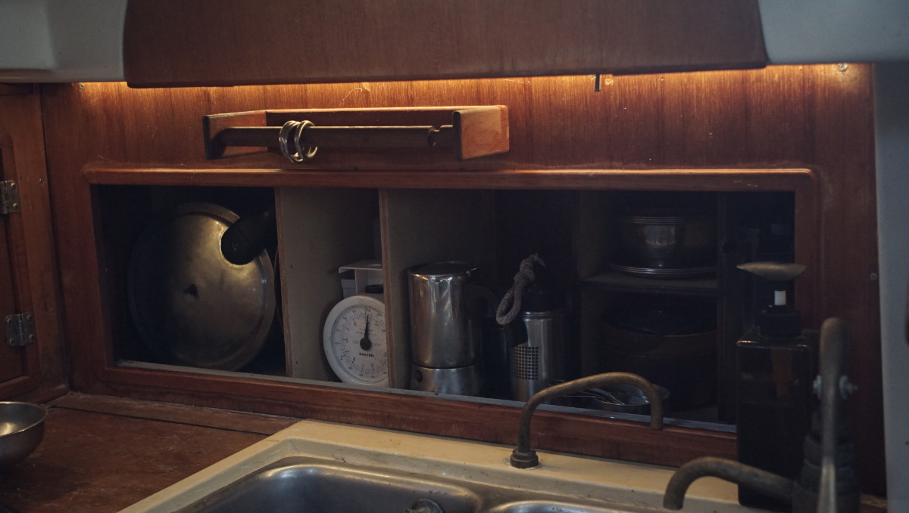
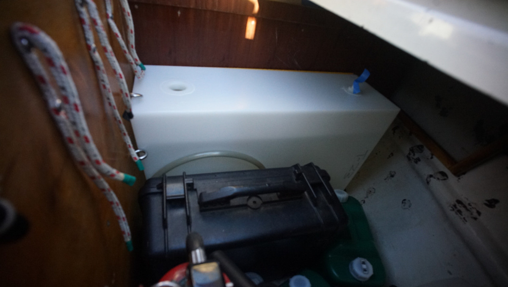
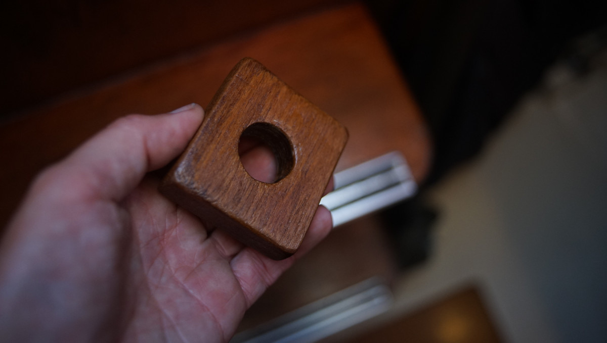
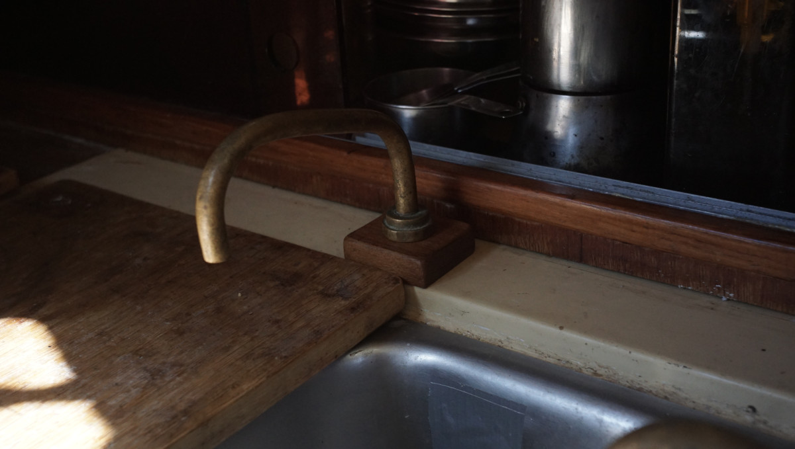
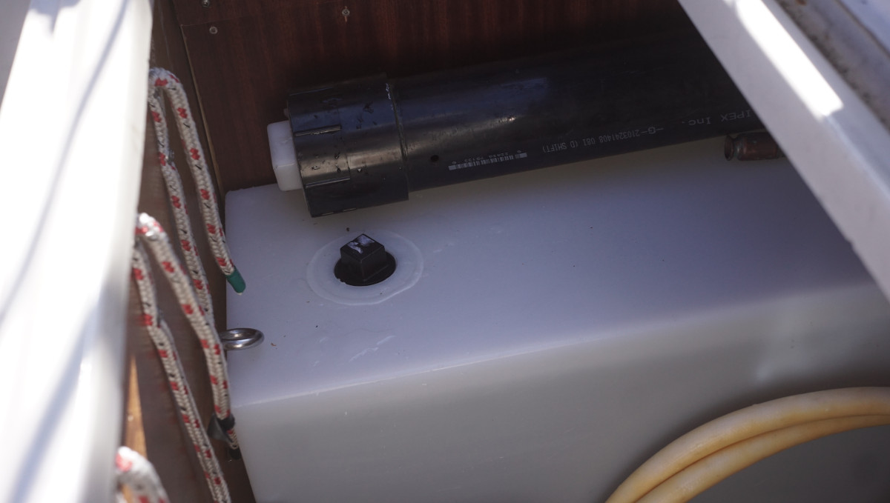

water tank
2026.05.14
Victoria, B.C.

On May 13th we bought a 105 L (27 Gallons) high-density polyethylene water tank(Century Plastics tank) to install inside the cockpit locker. Prior to this, we stored water in this space in separate jerry cans, but we were limited by the size of the space(we didn't want to stack containers). A tank would permit for more water, and would help shift some of the weight aboard Pino aft.
Previously, we stored extra water at the bow in a 50 L lorry tank purchased in Japan in 2019, but as mentioned, we have too much weight forward and decided to instead turn this bin into extra food storage(after removing all of the hoses).
file:///home/rekbell/Github/100r.co/media/content/knowledge/watertank_vberth.jpgPino's cockpit locker is cavernous, the tank we picked was 53x25x78 cm (21x10x31 in), we could fit the tank while still having plenty of space to store other gear. We had to wait a few days for the tank because the person in charge of installing the spin-welded fittings was not in town that week. While waiting, we decided to take one of the galley cabinets apart to re-design it.

Taking the old cabinet apart was easy, most of the finishing nails holding it all together were rusty and brittle. We built the new cabinet without buying new wood, our friend Peter graciously donated a short length of marine ply so we could replace the backside, we used bits of wood we already had on hand to make up the rest (we had to glue and bind some bits together to form some of the walls, it worked out well in the end).

Yamaha sailboat cabins have a lot of molded areas, the galley especially. The cabinet area had a molded ceiling and floor, we decided to not cover them up and to build up the new cabinet by securing the walls via other surfaces.

Because the space no longer had a ceiling and floor, we had to attach the tracks for the acrylic doors of the front face of the cabinet a bit differently.

Now, our galley cabinet is more spacious, and is designed to fit our kitchen tools perfectly (we've since added the trims to the front of the cabinet, to hide the edges and screws).
When the tank was ready we borrowed Al and Wayne's cart to ferry it back from Trotac. The tank isn't too heavy, but it is awkward to carry, the cart was a real help. The tank fit through the cockpit locker door, with an inch to spare, it fit perfectly in the space just aft of our galley. The wall already had a pre-drilled hole, left over from when Pino had an espar forced-air diesel heater. We would use this hole to pass the intake hose for the tank over to a baby foot pump under the galley sink.

Our galley used to have 2 foot pumps, one for salt water, the other for fresh water. After closing the salt-water thruhull, we removed one foot pump and kept the other as a backup(at that point we replaced the fresh water foot pump with a fynspray hand pump). We re-installed the backup for this project, now the galley has 2 separate faucets, one for the integral 170 L tank, the other for the new 105 L tank. One is operated by hand, the other by foot (better for hand-washing).
We had to replace some o-rings in the baby foot pump to stop a leak, but otherwise it worked perfectly. We had kept the foot pump faucet from before and re-installed it again in the galley, where it had one been many years ago. We carved a little wooden platform out of leftover pieces of teak to help support it.


There was a storage locker in the cockpit locker floor, the new water tank would cover it in part, we didn't want to lose access to that space so we split the lid in 2. Now, it is still possible to store items there, and the other smaller half is used to keep the water tank in place. We installed a beefy lip on the edge of the board to keep the tank from shifting. We used beefy rings to hold the tank in place vertically, too.
We can still store plenty of items in the locker, in fact we put our bikes in there for the first time (necessary to take both wheels, seats and handlebars off). Having our bikes in this space for the summer free up the quarter berth entirely. Joy, oh joy!
We kept 4 bins, 1x20L and 3x10L. Smaller bins are useful to ferry water from the dock to the boat. We will use the 20L bin as an annex.
